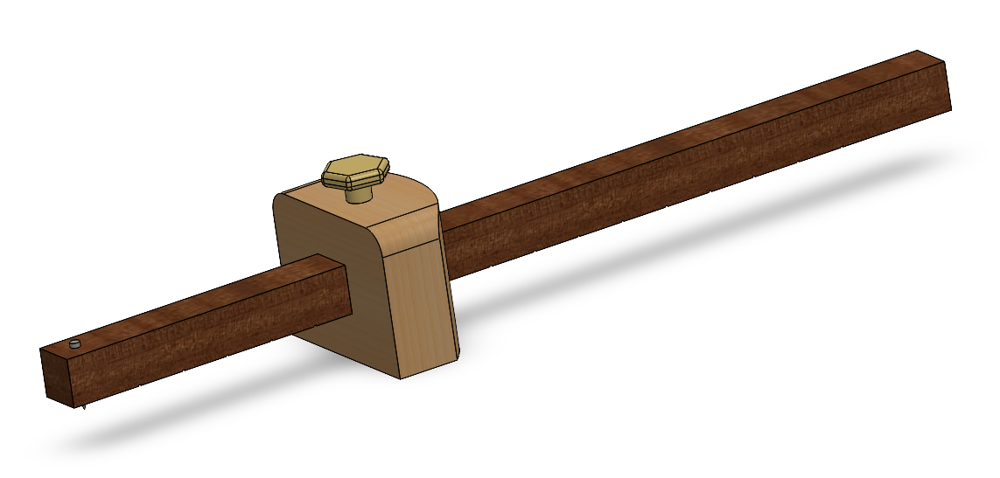

Objectif :
Dans ce TP, vous allez découvrir la C.A.O. et l'utilisation du logiciel Solidworks.
Mise en situation
Un trusquin est un outil de traçage opérant par translation sur une surface d'appui de référence. Constituant toute une famille d'outils, ceux-ci sont utilisés principalement en menuiserie, en ébénisterie et en fabrication mécanique. Il en existe de nombreuses formes, présentant des degrés de sophistication plus ou moins grands. Ainsi les trusquins numériques utilisant les mêmes techniques que celles utilisées pour les pieds à coulisse ou les divers comparateurs, permettent une précision inégalée.
